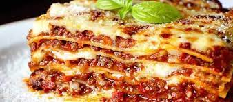
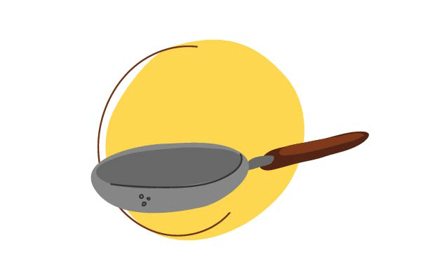

Lasagna
This is a faster, and less expensive lasagna.

The Italian favorite of lasagne or lasagna that we all know and love originated
in Italy in the city of Naples during the Middle Ages. One of the first references to
modern-day lasagne can be found in a 14th-century English cookbook that highlighted a
dish with layers of pasta without the tomatoes.
This simple recipe can be made with the basic utensils of any kitchen, you will only need
to use a frying pan and a blender, although if you want to make it in a traditional way,
a good stone molcajete is the basic kitchen utensil for sauces.
- Dutch Oven
- Hamilton Beach Blender
- Bowl
- Baking dish
Let's get started!

Ingredients
For 12 people
- 1 pound sweet Italian sausage
- ¾ pound lean ground beef
- ½ cup minced onion
- 2 cloves garlic, crushed
- 1 (28 ounce) can crushed tomatoes
- 2 (6 ounce) cans tomato paste
- 2 (6.5 ounce) cans canned tomato sauce
- ½ cup water
- 2 tablespoons white sugar
- 1 ½ teaspoons dried basil leaves
- ½ teaspoon fennel seeds
- 1 teaspoon Italian seasoning
Steps
Difficulty: Not too tricky
Total time: 3 hours 15 minutes
Cook in 2.5 hours
- In a Dutch oven, cook sausage, ground beef, onion, and garlic over medium heat until well browned. Stir in crushed tomatoes, tomato paste, tomato sauce, and water. Season with sugar, basil, fennel seeds, Italian seasoning, 1 teaspoon salt, pepper, and 2 tablespoons parsley. Simmer, covered, for about 1 1/2 hours, stirring occasionally.
- Bring a large pot of lightly salted water to a boil. Cook lasagna noodles in boiling water for 8 to 10 minutes. Drain noodles, and rinse with cold water. In a mixing bowl, combine ricotta cheese with egg, remaining parsley, and 1/2 teaspoon salt.
- Preheat oven to 375 degrees F (190 degrees C).
- To assemble, spread 1 1/2 cups of meat sauce in the bottom of a 9x13-inch baking dish. Arrange 6 noodles lengthwise over meat sauce. Spread with one half of the ricotta cheese mixture. Top with a third of mozzarella cheese slices. Spoon 1 1/2 cups meat sauce over mozzarella, and sprinkle with 1/4 cup Parmesan cheese. Repeat layers, and top with remaining mozzarella and Parmesan cheese. Cover with foil: to prevent sticking, either spray foil with cooking spray, or make sure the foil does not touch the cheese.
- Bake in preheated oven for 25 minutes. Remove foil, and bake an additional 25 minutes. Cool for 15 minutes before serving.
Ready: your lasagna is very ready for you to enjoy!.
HOME